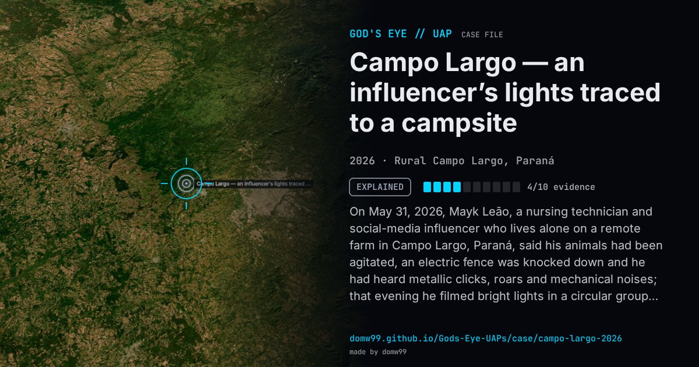

Campo Largo — an influencer’s lights traced to a campsite

On May 31, 2026, Mayk Leão, a nursing technician and social-media influencer who lives alone on a remote farm in Campo Largo, Paraná, said his animals had been agitated, an electric fence was knocked down and he had heard metallic clicks, roars and mechanical noises; that evening he filmed bright lights in a circular group over a forested valley several kilometres away for twenty to forty minutes, and later drew a second, larger object he said passed over the property. His live streams and videos reached millions within days and drew national coverage. The Brazilian Air Force’s airspace department said its radars detected no unknown object, and internet users compared the sounds with a film trailer. Working from the coordinates of the farm, an image analyst then showed that the lights matched an escarpment beside a campsite, Chácara Paraíso, about 10 km away, whose lights are switched off when it has no guests.
Explanation
An image analyst who worked from the filming position showed the lights came from an escarpment by a campsite, Chácara Paraíso, about 10 km away, distorted by distance and the air; the campsite’s lights are off when it is empty, which is why they were not seen every night. The Brazilian Air Force said its air-defence radars detected nothing unusual.
What was seen
Shape: A ring of lights alternating in brightness above the trees
Witnesses: The influencer Mayk Leão, alone on his farm
Duration: Twenty to forty minutes
Sources
- Folha (F5) — the Air Force contradicts the influencer and says it detected no UFO
- g1 Paraná — influencer films strange lights (June 2, 2026)
- Jundiaí Agora — analysis tracing the lights to the campsite
Browse
- Brazil
- 2020s
- Explained
- Photo and video cases
- Official government documents
- Video footage
- Audio recordings or radio transcripts
- Lights and fireballs